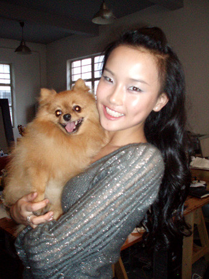
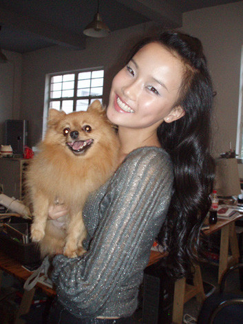
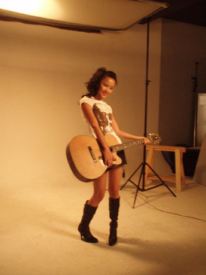
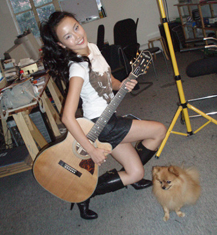

前两天我去拍了《新民ＢＥＬＬＡ》杂志，化妆师又让我尝试了新的造型，《新民ＢＥＬＬＡ》主要是介绍生活中的我．．．应该很快就上市会了．．大家都买呀，封面就是我，应该很好找！哈！
我家ＤＯＮＧＤＯＮＧ第一次上杂志拉！那天他的表现很好哦，除了很有镜头感之外，还很喜欢抢镜，没轮到他拍他也硬要跑到我旁边．
ＤＯＮＧＤＯＮＧ和我

ＤＯＮＧＤＯＮＧ是我养了将近４年的小狗，ＤＯＮＧＤＯＮＧ很可爱，表情给人感觉总是笑着的，我们全家都很溺爱他．

辫子梳好歪啊，和上面比较是不是年轻了很多．帮我拍照的这个摄影师，我们已经是第三次一起工作了，很有默契．．

ＤＯＮＧＤＯＮＧ又在抢镜了，每次我在家弹琴的时候，他都会静静地陪着我．．．那天拍完回到家，平时都很兴奋，那天他累得饭也没怎么吃，倒头就睡．．可能他体会到姐姐工作是多么辛苦了吧．．．哈
